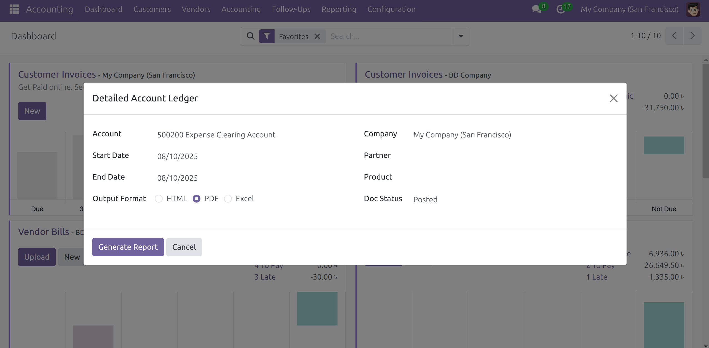
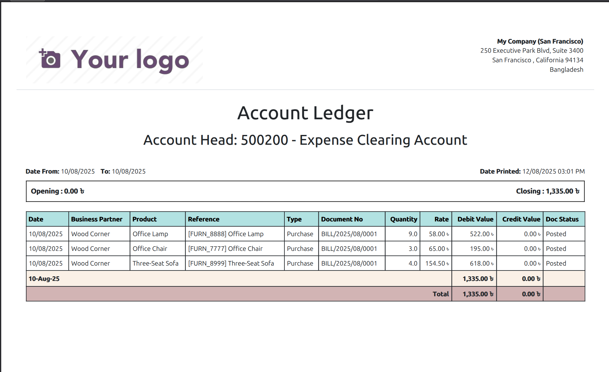

Detailed Account Ledger Report
A comprehensive and beautifully designed financial report for Odoo 18.
Overview
The Detailed Account Ledger Report module for Odoo 18 provides a powerful and customizable
tool for tracking financial transactions. Designed with a clean interface and robust filtering options, it
allows businesses to gain deep insights into their account activities.
This report offers a clear, chronological view of all movements within a selected account, making
auditing and financial analysis seamless.
Screenshots

Powerful and flexible report wizard with multiple filter options.

Clean, professional, and easy-to-read PDF/HTML report output.
Key Features
- Flexible Report Wizard: Easily select your desired Account, Date Range, specific
Company (for multi-company environments), optional Partner, and optional Product.
- Multiple Output Formats: Generate your report in HTML (for quick viewing in Odoo), PDF
(for professional printing), or Excel (for further analysis).
- Accurate Balance Calculation: Displays precise Opening and Closing Balances,
automatically adjusting for account types (Debit - Credit for Assets/Expenses; Credit - Debit for
Liabilities/Equity/Income).
- Grouped Transactions: Transactions are clearly grouped by date, with daily subtotals
for both Debit and Credit values, providing a granular view of daily activity.
- Professional Design: Features a clean, black-and-white aesthetic with custom headers,
strong borders, and the modern Ubuntu font for excellent readability.
- Accounting Number Formatting: All monetary values are formatted in standard accounting
style, showing negative numbers in parentheses (e.g., (1,234.56)) and zero values as 0.00.
- Branded Reports: Reports automatically include your company's logo, name, and address
in the header for a consistent and professional brand image.
Installation
- Ensure you have Odoo 18 installed and running.
- Clone this module repository into your Odoo custom addons path.
- Restart your Odoo server to load the new module.
- Go to the Apps menu in Odoo, click "Update Apps List".
- Search for "Detailed Account Ledger Report" and click "Install".
Once installed, navigate to Accounting > Reporting > Detailed Account Ledger to generate
your report.